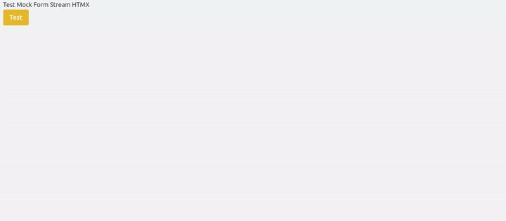

Installation
Install With Pypi:
Usage
This is an example of a simple case where we return a list from a structured OpenAI streamed llm output. Despite json strings being returned, struct_strm is able to return an incrementally populated list object as the response.
1
2
3
4
5
6
7
8
9
10
11
12
13
14
15
16
17
18
19
20
21
22
23
24
25
26
27
28
29
30
31
32
33
34
35
36
37
38
39
40
41
42
43
44
45
46 | import asyncio
from struct_strm import parse_openai_stream
# The query and context for the LLM call
prompt_context = ""
user_query = "Create list describing 5 open source llm tools"
class DefaultListItem(BaseModel):
item: str = ""
class DefaultListStruct(BaseModel):
# mostly just for testing
items: list[DefaultListItem] = []
TestStruct = DefaultListStruct
few_shot_examples = DefaultListStruct(
items=[
DefaultListItem(item="The Hugging Face Transformers library is an open-source Python library that provides access to a vast collection of pre-trained Transformer models for various machine learning tasks. While initially focused on Natural Language Processing (NLP), its capabilities have expanded to include computer vision, audio processing, and multimodal applications.")
]
).model_dump_json()
prompt_context = ""
query = "Create list describing 10 open source llm tools"
model = "gpt-4.1-mini"
client = await aget_openai_client()
messages = []
messages.append({"role": "system", "content": prompt_context})
if few_shot_examples is not None:
messages.append({"role": "system", "content": f"example response: {few_shot_examples}"})
messages.append({"role": "user", "content": query})
stream = client.beta.chat.completions.stream(
model=model,
messages=messages,
response_format=TestStruct,
temperature=0.0,
)
async def test_list_parse(stream):
structured_response_stream = parse_openai_stream(stream, TestStruct)
async for structure in structured_response_stream:
async for list_struct in structure:
print(list_struct)
asyncio.run(test_list_parse(stream))
|
As we loop through the items in the async for loop:
1
2
3
4
5
6
7
8
9
10
11
12
13
14 | >>> DefaultListStruct(items=[DefaultListItem(item="Hugg")])
>>> DefaultListStruct(items=[DefaultListItem(item="Hugging")])
>>> DefaultListStruct(items=[DefaultListItem(item="Hugging Face")])
>>> DefaultListStruct(items=[DefaultListItem(item="Hugging Face Trans")])
>>> DefaultListStruct(items=[DefaultListItem(item="Hugging Face Transformers")])
>>> DefaultListStruct(items=[DefaultListItem(item="Hugging Face Transformers:")])
>>> etc...
>>> DefaultListStruct(items=[DefaultListItem(item="Hugging Face Transformers: A popular open-source library etc....")])
>>> DefaultListStruct(items=[DefaultListItem(item="Hugging Face Transformers: A popular open-source library etc...."), DefaultListItem(item="Llama")])
>>> DefaultListStruct(items=[DefaultListItem(item="Hugging Face Transformers: A popular open-source library etc...."), DefaultListItem(item="Llama.")])
>>> DefaultListStruct(items=[DefaultListItem(item="Hugging Face Transformers: A popular open-source library etc...."), DefaultListItem(item="Llama.cpp")])
>>> DefaultListStruct(items=[DefaultListItem(item="Hugging Face Transformers: A popular open-source library etc...."), DefaultListItem(item="Llama.cpp:")])
>>> DefaultListStruct(items=[DefaultListItem(item="Hugging Face Transformers: A popular open-source library etc...."), DefaultListItem(item="Llama.cpp: A")])
>>> etc...
|
HTML Components
This library also provides some convience functions for serving html components (htmx style and vanilla javascript) direclty to the frontend. Reference implementations can be found in the tests/02_app directory. If you use frontend frameworks like React, you can ignore this section and directly use the core library.
Since we are streaming structured outputs for the purpose of using them in the UI, we know we need several features, such as a pre-response placeholder, streaming reading/updates, and a final post response indicator. Right now I have some minimal implementations included in this library. They are not super customizable yet, but can serve as references for your projects.

Example usage with FastAPI and HTMX:
1
2
3
4
5
6
7
8
9
10
11
12
13
14
15
16
17
18
19
20
21
22
23
24
25
26
27
28
29
30
31
32
33
34
35
36
37
38
39
40
41
42
43
44
45
46
47
48
49
50
51 | from struct_strm.structs.list_structs import DefaultListStruct
from struct_strm.ui_components import ListComponent
from struct_strm.structs.list_structs import simulate_stream_list_struct
from fastapi import FastAPI, Request
from fastapi.responses import HTMLResponse
from sse_starlette.sse import EventSourceResponse
from fastapi.templating import Jinja2Templates
app = FastAPI()
templates = Jinja2Templates(directory="tests/app")
@app.get("/get_list_stream")
def test_fetch_list_sse():
# kick off SSE stream
sse_container = "sse-list"
stream_target = "stream-list"
component_path = "/test_list"
sse_html = f"""<div
id="sse-list-container"
hx-ext="sse"
sse-connect="{component_path}">
<div
sse-swap="message"
hx-target="#{stream_target}"
hx-swap="innerHTML">
</div>
<div
sse-swap="streamCompleted"
hx-target="#{sse_container}">
</div>
</div>
"""
return HTMLResponse(content=sse_html, media_type="text/html")
@app.get("/test_list")
async def test_list():
component = ListComponent()
stream: AsyncGenerator = simulate_stream_list_struct(interval_sec=0.02)
html_component_stream: AsyncGenerator = component.render(response_stream=stream)
async def wrapper():
async for item in html_component_stream:
print(item)
yield item
yield {"event": "streamCompleted", "data": ""}
return EventSourceResponse(wrapper(), media_type="text/event-stream")
|